누를 것만 눈에 띄게
바이브 코딩으로 사이트를 만들고 나면 '사용자가 정말 좋아할까?'라는 고민이 남아요. 영상은 디자이너가 아닌 개발자도 바로 적용할 수 있는 팁 16개를 보여 줘요. 팁마다 왼쪽에 불편한 화면, 오른쪽에 고친 화면을 두고, 이어서 고친 부분의 React 코드를 짧게 띄워요.
1. 자주 누르는 버튼만 강조해요
'프로젝트 설정' 화면에 저장·취소·삭제·공유 버튼이 같은 모양으로 늘어서 있으면 무엇을 눌러야 할지 잠깐 멈추게 돼요. 실제로 많이 누르는 버튼은 대개 정해져 있어요. 오른쪽 화면은 '저장'만 파란색으로 채우고, 나머지는 테두리만 둔 버튼으로 낮췄어요. '공유'는 '더 보기'로 들어갔어요.

2. 덜 쓰는 선택지는 '더 보기'로 숨겨요
보고서 내보내기 메뉴에 PDF(Portable Document Format), CSV(Comma-Separated Values), 이미지, Excel, HTML(HyperText Markup Language) 같은 형식이 열 개 가까이 깔려 있으면 PDF 하나를 찾는 데도 시간이 걸려요. 고친 화면은 자주 쓰는 PDF·CSV·이미지 세 개만 남기고 나머지를 '더 보기' 버튼 뒤로 보냈어요. 가장 많이 쓰는 PDF는 노란색으로 미리 골라 둔 상태예요.
오른쪽 코드가 하는 일은 두 가지예요. formats.slice(0, 3)으로 앞의 세 개만 보여 주고, defaultValue="pdf"로 PDF를 기본값으로 둬요. 나머지는 openMore를 부르는 '더 보기' 버튼이 맡아요.
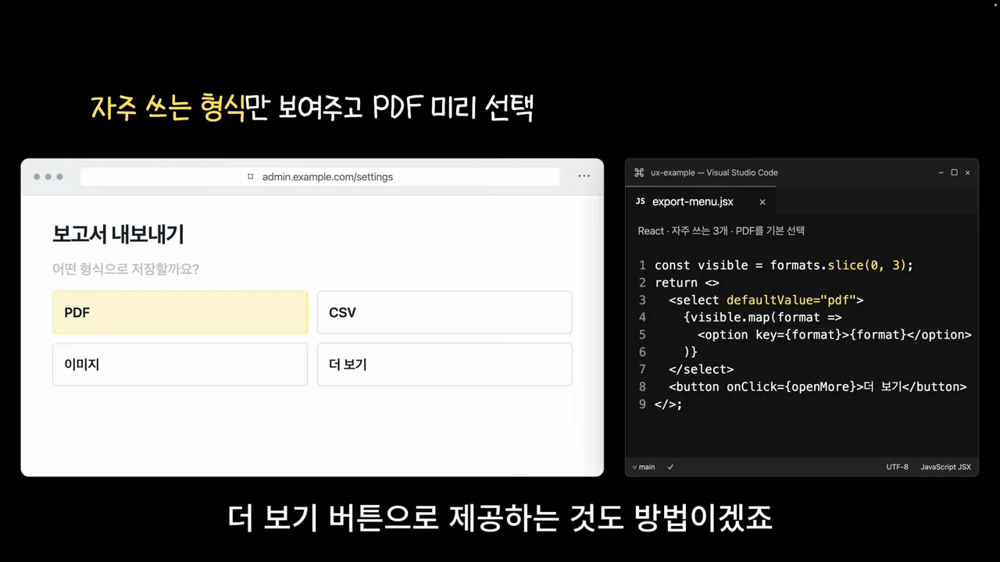
입력 폼은 언제, 어디를 알려 줄까요
발표자는 사용자가 무언가를 입력하는 화면을 가장 불편한 곳으로 꼽아요. 그래서 유효성 검사에 특히 신경 써야 한다고 해요. 이 구간은 검사를 언제 할지, 틀린 곳을 어떻게 알려 줄지, 쓰던 내용을 어떻게 지킬지를 다뤄요.
3. 다 쓴 뒤에 검사해요
회원가입 이메일 칸에 'h' 한 글자만 쳤는데 칸이 빨개지고 '올바른 이메일을 입력하세요'가 뜨면 사용자는 '아직 다 안 썼는데 왜 이러지' 하고 느껴요. 고친 화면은 이메일을 다 입력하고 비밀번호 칸(노란 테두리)으로 넘어간 뒤에야 이메일 칸 아래에 안내를 띄워요.
코드에서는 입력 칸의 onBlur에 검사를 걸었어요. 칸을 벗어나는 순간 브라우저 기본 검사 결과(validity.valid)를 보고, 틀렸으면 '이메일을 확인하세요'를 error 상태에 넣어 칸 아래에 보여 줘요.
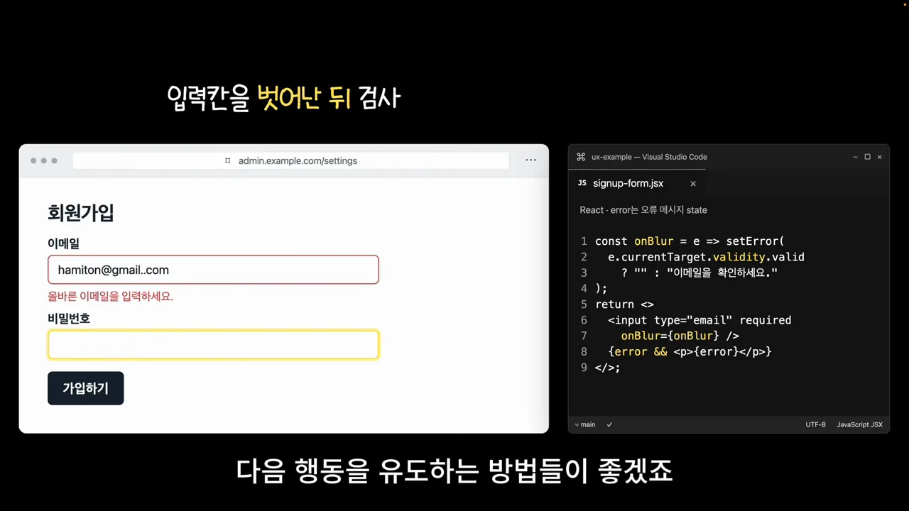
4. 틀린 칸으로 바로 데려가요
영상의 '배송 정보' 폼은 칸이 네 개뿐이지만, 칸이 훨씬 많으면 맨 위의 '입력값을 확인하세요'만으로는 어디가 틀렸는지 찾아 헤매요. 고친 화면은 전화번호 칸에 노란 테두리를 두르고 그 아래에 '전화번호 11자리를 입력해 주세요'라고 적었어요.
코드는 aria-invalid="true"가 붙은 첫 칸을 찾아 focus()하고, scrollIntoView로 그 칸을 화면 가운데까지 부드럽게 스크롤해요. 위쪽 설명에 '오류 표시를 DOM에 반영한 뒤 실행'이라고 적혀 있어요. 오류 표시가 화면에 그려진 다음에 찾아야 첫 칸을 놓치지 않아서예요.
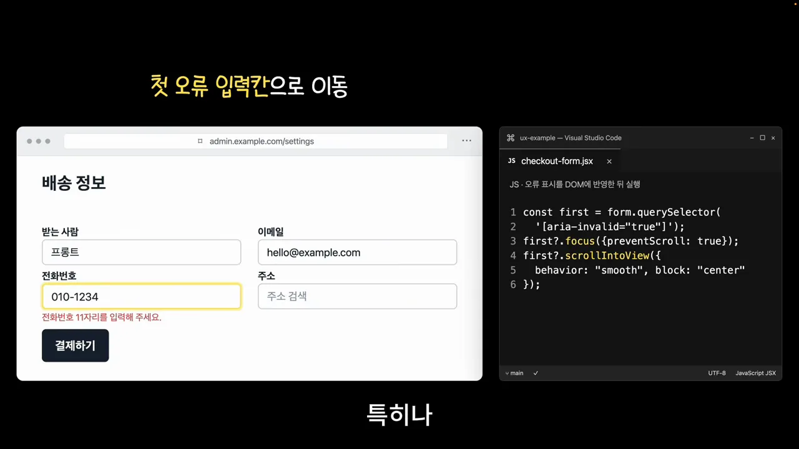
5. 쓰던 글은 임시 저장해요
새 글을 열심히 썼는데 저장에 실패해서 내용이 사라지면 처음부터 다시 써야 해요. 고친 화면은 오른쪽 위에 '임시 저장됨' 배지를 달고, 실패해도 '저장하지 못했어요. 글은 그대로 남아 있어요'라고 알려 줘요. 아래에는 '다시 저장' 버튼이 있어요.
서버에 저장하지 않아도 돼요. 코드는 처음 열 때 localStorage.getItem("draft")로 초안을 불러오고, 글이 바뀔 때마다 setItem으로 다시 담아요. 브라우저 안에서만 도는 간단한 방법이에요.
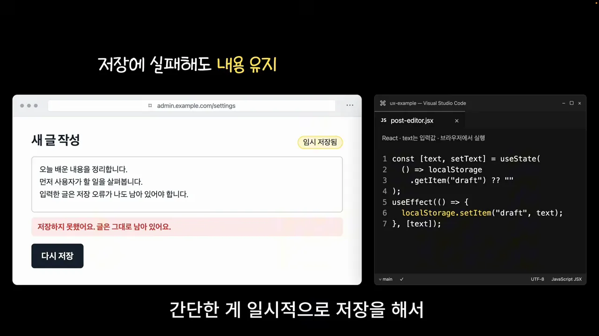
입력하기 쉽게 키보드와 표시 다듬기
이 구간의 세 팁은 입력값 자체를 다뤄요. 맞는 키보드를 띄우고, 숫자를 읽기 쉽게 다듬고, 가려진 비밀번호를 확인할 수 있게 해요. 발표자는 이런 처리를 기본으로 볼 수 있다고 말해요.
6. 전화번호 칸에는 숫자 키패드를 띄워요
휴대폰 번호를 넣으려는데 문자 키보드(qwerty)가 뜨면 당황해요. 고친 화면은 '휴대폰 번호' 칸을 누르면 1~9, *, 0, # 이 있는 전화 키패드가 떠요.
코드는 input 하나에 속성 네 개를 붙였어요. type="tel"과 inputMode="tel"로 전화 키패드를 부르고, autoComplete="tel"로 저장된 번호를 자동 완성에 띄우고, aria-label로 칸 이름을 붙여요.
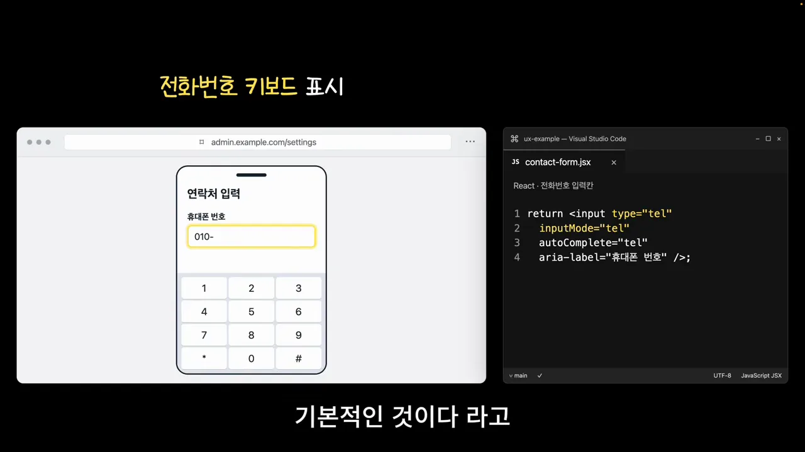
7. 금액에는 세 자리마다 쉼표를 넣어요
판매 가격 칸에 1490000이라고 쳐 두면 14만 원인지 149만 원인지 0을 세어 봐야 해요. 고친 화면은 입력하는 동안 자동으로 1,490,000처럼 쉼표를 넣어요.
코드의 format 함수는 입력값에서 숫자가 아닌 글자를 지우고(replace(/\D/g, "")), 숫자로 바꾼 뒤 toLocaleString("ko-KR")로 쉼표를 찍어요. 칸에는 inputMode="numeric"을 줘서 숫자 키패드가 뜨게 했어요.
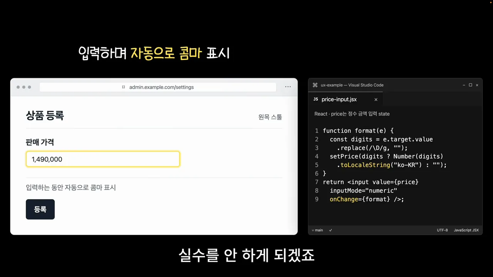
8. 비밀번호는 '보기'로 확인하게 해요
요즘 비밀번호는 열 자가 넘고 규칙도 복잡해서, 점으로만 보이면 제대로 쳤는지 알 수 없어요. 고친 로그인 화면은 비밀번호 칸 오른쪽 끝에 노란 '보기' 버튼을 달았어요. 누르면 입력한 내용이 원문으로 보여요.
코드는 show 상태 하나로 input의 type을 "text"와 "password" 사이에서 바꿔요. 버튼 글자도 '보기'와 '숨기기'로 함께 바뀌어요.
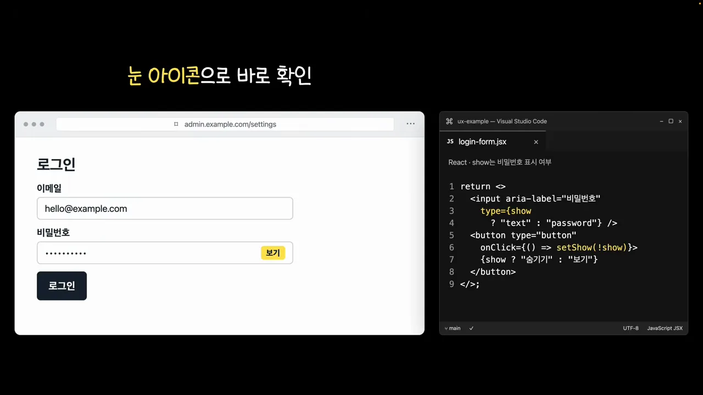
지금 무슨 일이 일어나는지 알려 주기
이 구간의 다섯 팁은 모두 '지금 무슨 일이 일어나는지'를 사용자에게 알려 주는 일이에요. 기다리는 중인지, 비어 있는지, 실패했는지, 값이 바뀌었는지를 화면이 먼저 말해 줘요.
9. 업로드 진행률을 보여 주고 중복 요청을 막아요
248MB짜리 intro-video.mp4를 올리는데 '업로드 중…' 아래 빙글빙글 아이콘만 돌면, 사용자는 더 기다릴지 새로 고칠지 고민해요. 고친 화면은 '업로드 완료 · 100%'와 노란 진행 막대를 보여 주고, 버튼도 '업로드 완료'로 바뀌어요. 슬라이드 제목은 '진행률 표시와 업로드 중 비활성화'예요.
코드는 busy 상태로 업로드 중에는 버튼을 disabled로 막아요. 버튼 글자에는 업로드 중 · 98%처럼 진행률을 넣어요. 위쪽 설명은 'sendFile은 XHR 진행률 반영'이라고 적고 있어요. sendFile이 진행률을 setProgress로 넘겨 준다는 뜻이에요.
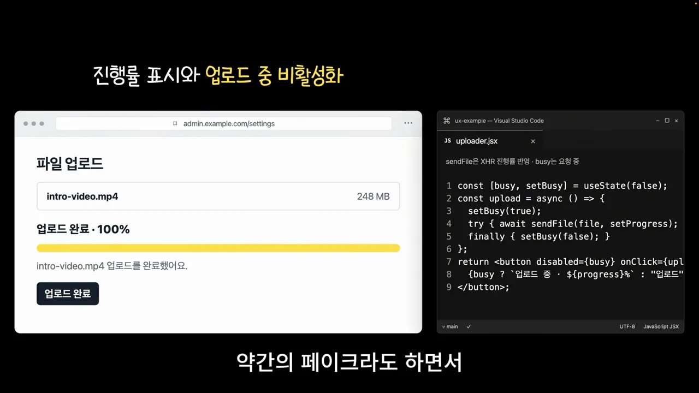
발표자는 진행률을 보여 주는 게 기술적으로 표준처럼 쉽게 되는 일은 아니라고 말해요. 그래도 방법은 있고, 약간 꾸며서라도 진행되는 모습을 보여 주면 사용자가 안심한다고 해요.
10. 빈 화면에서 다음 행동을 안내해요
프로젝트 목록이나 장바구니가 비어 있을 때 '데이터가 없습니다'만 띄우면 사용자는 여기서 뭘 해야 할지 몰라요. 고친 화면은 가운데에 + 아이콘과 '아직 프로젝트가 없어요', '첫 프로젝트를 만들어 볼까요?'를 적고, 노란 '프로젝트 만들기' 버튼을 놓았어요. 발표자는 이렇게 다음 행동을 유도하면 사용자가 서비스를 더 잘 쓰지 않겠냐고 말해요.
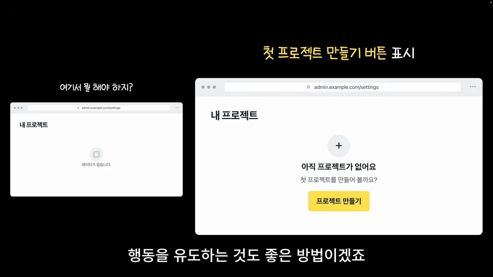
11. 에러에는 이유와 '다시 시도'를 붙여요
글 편집 중에 'Error 500'만 뜨면 사용자는 다음에 뭘 해야 할지 망설여요. 고친 화면은 '저장하지 못했어요. 글은 그대로 있어요'라고 상황을 알려 주고, 바로 아래 노란 '다시 시도' 버튼을 달았어요. 안내 문구 하나만 넣어도 다음 행동이 보이는 사이트가 된다는 게 발표자의 말이에요.
코드의 retrySave는 지금 글(text)을 그대로 다시 savePost로 보내요. 성공하면 에러를 지우고, 실패하면 '저장 실패'를 다시 띄워요.
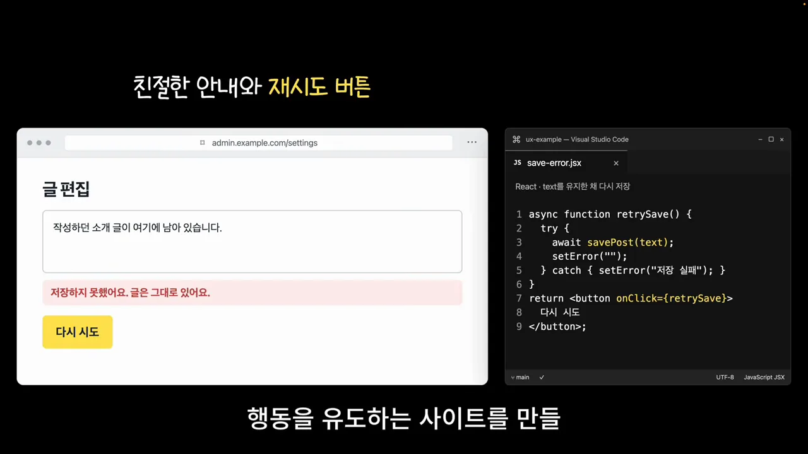
12. 바뀐 합계는 숫자가 올라가게 보여 줘요
장바구니에서 원목 의자 수량을 늘려도 합계가 바뀌었는지, 얼마나 늘었는지 바로 알아채기 어려워요. 고친 화면은 수량을 바꾸면 합계 칸에 노란 배경이 들어오고 숫자가 ₩89,000에서 ₩267,000까지 이어서 올라가요. 캡처는 그 중간인 ₩212,810을 지나는 순간이에요.
코드는 motion 라이브러리의 animate(from, to, …)를 0.8초, linear로 돌리면서 매 순간 값을 반올림해 쉼표와 함께 합계 칸에 써 넣어요. 발표자는 애니메이션이 늘 좋은 건 아니라고 덧붙여요. 값이 크게 바뀌는 곳에 쓰라는 거예요.
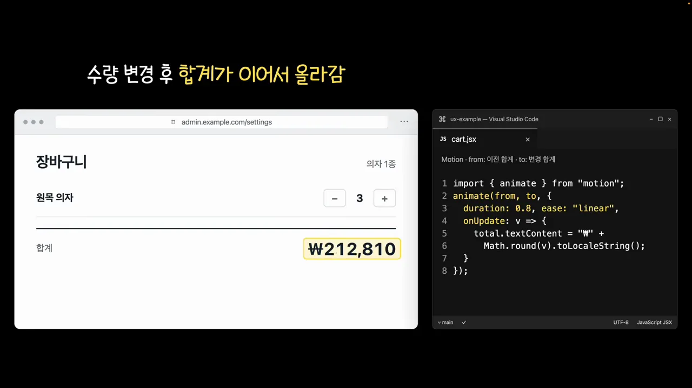
13. 확인 창 대신 실행 취소를 줘요
할 일 목록에서 '완료'를 누를 때마다 '완료 처리하시겠습니까?' 창이 뜨면 사용자는 매번 한 번 더 눌러야 해요. 발표자는 이걸 아주 불편한 UX로 봐요. 요즘 alert 창을 잘 쓰지 않는 것과 비슷한 이유예요.
고친 화면은 누르는 즉시 'UX 예시 검토하기'에 줄을 긋고, 화면 아래에 '할 일을 완료했어요.'와 '실행 취소'가 있는 검은 띠를 띄워요. 가만히 두면 이 띠는 사라지게 할 수 있어요. 코드는 done이 참일 때만 실행 취소 버튼을 보여 주고, 누르면 setDone(false)로 되돌려요.
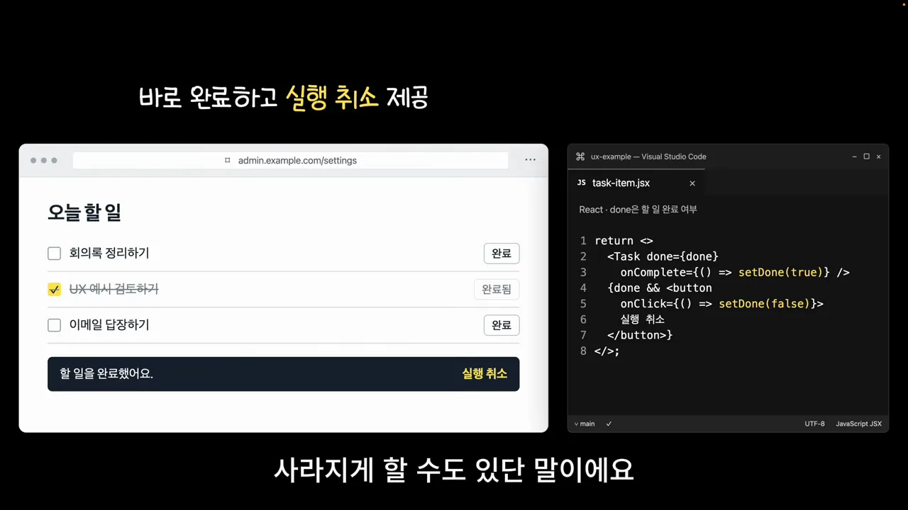
설정은 지키고, 화면은 흔들리지 않게
마지막 세 팁은 사용자가 해 둔 일을 지키고, 화면을 흔들지 않고, 기다림을 줄이는 이야기예요.
14. 검색 조건과 기간을 유지해요
의자를 검색하면서 '원목', '10만 원 이하', '기간 30일' 필터를 걸고 5페이지까지 넘겼어요. 원목 의자 상세로 들어가 장바구니에 담고 돌아왔더니 필터가 다 풀리고 1페이지로 돌아가 있으면 처음부터 다시 걸어야 해요. 발표자는 필터도 폼 입력처럼 사용자가 직접 정한 것이라 다시 하기 번거롭다고 말해요.
고친 화면은 돌아와도 필터 세 개가 노란 칩으로 남아 있고, 아래 페이지 번호도 5에 그대로 있어요. 필요 없어지면 따로 '옵션 초기화' 같은 버튼을 두면 돼요.
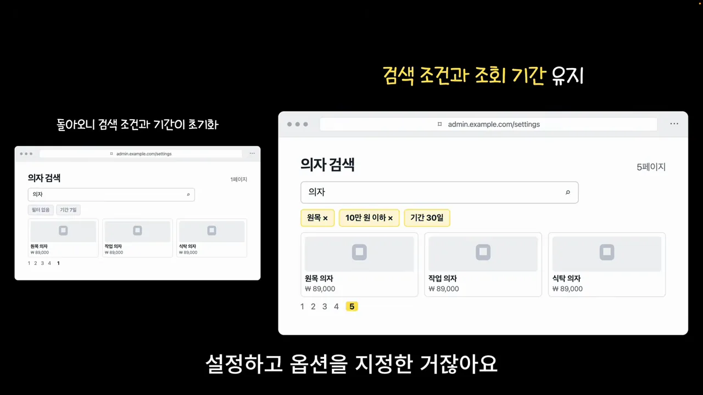
15. 이미지 자리를 미리 잡아 둬요
'새로운 소식' 카드의 '자세히 보기'를 누르려는 순간, 늦게 뜬 배너 이미지가 위에 끼어들어 버튼을 아래로 밀어내요. 그러면 엉뚱한 곳을 누르게 돼요. 발표자는 이걸 레이아웃 시프트라고 부르고, 성격 급한 사람일수록 자주 잘못 누른다고 말해요. 왼쪽 작은 화면의 빨간 점선이 원래 버튼이 있던 자리예요. 오른쪽은 노란 테두리로 '이미지 자리 확보'를 해 둬서 이미지가 뜨기 전에도 버튼이 제자리에 있어요.

코드는 img에 width="1600" height="900"을 적고, 스타일로 width: 100%, height: auto, aspectRatio: "16 / 9"를 줘요. 브라우저가 이미지를 받기 전에 16:9 비율만큼 높이를 먼저 잡아요.
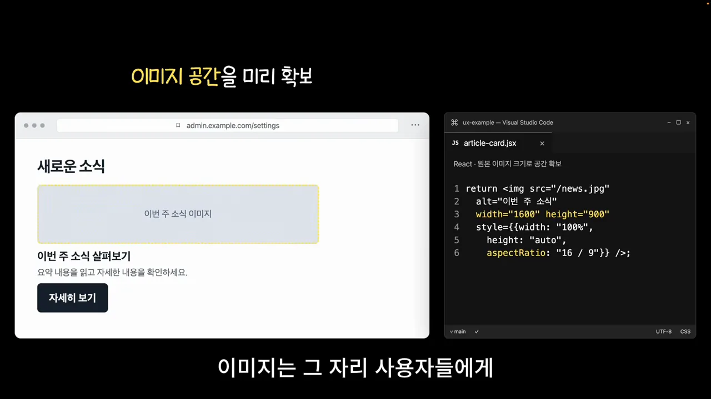
16. 다음 상품은 미리 불러와요
'상품 둘러보기'에서 '다음 상품 →'을 누를 때마다 잠깐 로딩이 떠요. 그 순간에야 데이터를 가져오기 때문이에요. 고친 화면은 원목 의자(₩89,000)를 보는 동안 다음 상품인 가죽 의자(₩189,000)를 미리 받아 둬서, 누르자마자 바로 보여 줘요. 이걸 프리패치라고 해요. 발표자는 꼼수 같기도 하지만 다음 페이지를 누를 것 같으면 미리 가져와 보여 주는 게 좋은 방법이라고 말해요.
코드 위쪽 설명은 '처음엔 Skeleton · 다음 상품은 prefetchQuery'예요. useEffect 안에서 products[index + 1]이 있으면 queryClient.prefetchQuery로 그 상품을 미리 받아 두고, staleTime: 60_000으로 1분 동안은 다시 받지 않게 해요.
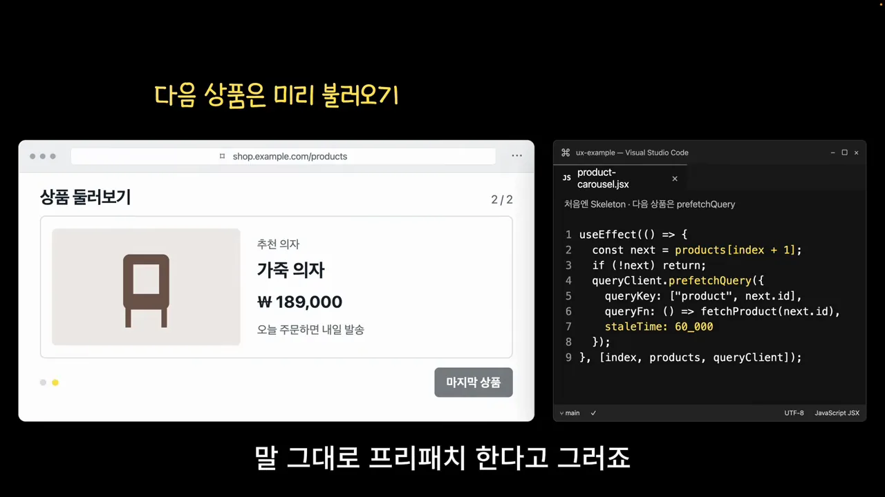
16가지를 한눈에
마지막 화면은 16개 팁을 4×4 카드로 모아 보여 줘요. 카드마다 번호와 짧은 이름이 붙어 있어요. 아래 표는 그 이름에, 영상이 보여 준 '불편한 화면'과 '코드의 핵심'을 붙였어요.
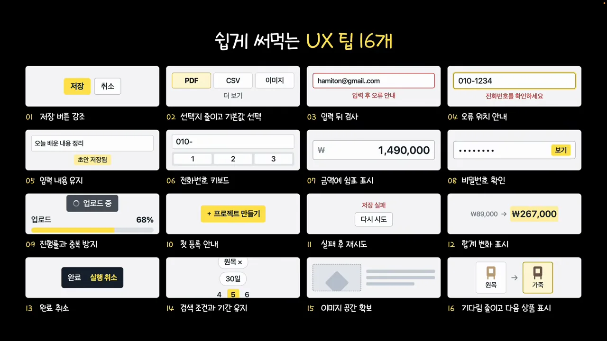
| 번호 · 카드 이름 | 불편한 화면 | 영상 코드의 핵심 |
|---|---|---|
| 01 저장 버튼 강조 | 버튼 네 개가 같은 모양 | 저장만 채운 색으로 |
| 02 선택지 줄이고 기본값 선택 | 내보내기 형식이 열 개 가까이 | slice(0, 3), defaultValue="pdf" |
| 03 입력 뒤 검사 | 한 글자 치자마자 에러 | onBlur에서 validity.valid 확인 |
| 04 오류 위치 안내 | 어디가 틀렸는지 모름 | focus() + scrollIntoView |
| 05 입력 내용 유지 | 저장 실패로 글이 사라짐 | localStorage에 초안 저장 |
| 06 전화번호 키패드 | 번호 칸에 문자 키보드 | type="tel", inputMode="tel" |
| 07 금액에 쉼표 표시 | 1490000의 자릿수가 헷갈림 | toLocaleString("ko-KR") |
| 08 비밀번호 확인 | 점만 보여 오타를 모름 | type을 text/password로 전환 |
| 09 진행률과 중복 방지 | 아이콘만 도는 업로드 | 진행률 표시, 업로드 중 disabled |
| 10 첫 등록 안내 | '데이터가 없습니다' | '프로젝트 만들기' 버튼 |
| 11 실패 후 재시도 | 'Error 500' | 안내 문구 + '다시 시도' |
| 12 합계 변화 표시 | 합계가 바뀐 걸 못 봄 | motion animate로 숫자 올리기 |
| 13 완료 취소 | 완료마다 확인 창 | 바로 완료 + '실행 취소' |
| 14 검색 조건과 기간 유지 | 돌아오면 필터가 풀림 | 필터·페이지 유지, 초기화 버튼 |
| 15 이미지 공간 확보 | 늦은 이미지가 버튼을 밈 | width·height, aspectRatio |
| 16 기다림 줄이고 다음 상품 표시 | 넘길 때마다 로딩 | prefetchQuery로 미리 받기 |
발표자는 이 목록을 외우는 것보다 사용자를 생각하는 습관이 중요하다고 말해요. 사용자가 무엇을 불편해할지, 한 단계를 어떻게 줄일지 따져 보면 더 편한 사이트를 만들 방법은 많다고 해요. 마지막 화면은 그 생각을 한 문장으로 남겨요.
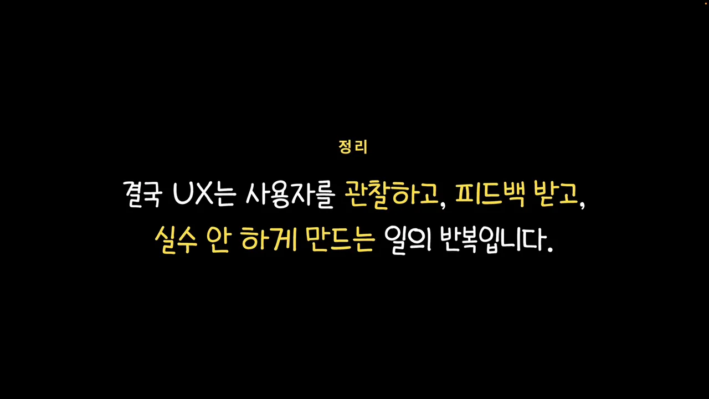